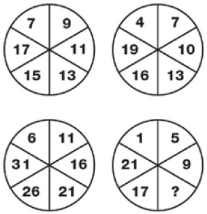

PUZZLE-3
Soru işareti yerine hangi sayı gelmelidir?

Cevap:
Soru işareti yerine gelmesi gereken sayı 13’tür.
Sol üst köşeden başlamak üzere sayılar, birinci diyagramda 2’şer, ikinci diyagramda 3’er, üçüncü diyagramda 4’er ve dördüncü diyagramda 5’er artmaktadır. Soru işareti üçüncü diyagramdadır ve aradığımız sayı 9’dan 4 büyük, 17’den 4 küçük; yani 13 olmalıdır.